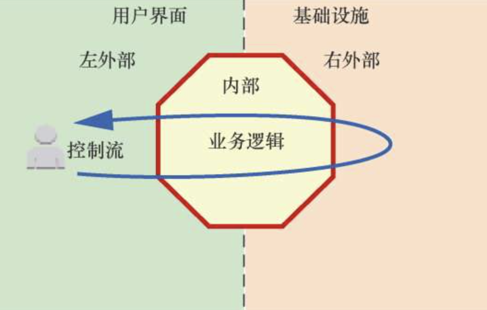

12 COLA架构
软件的首要技术使命：管理复杂度。
——史蒂夫·迈克康奈尔《代码大全（第2版）》
12.1 软件架构
软件架构是一个系统的草图。软件架构描述的对象是直接构成系统的抽象组件。各个组件之间的连接则明确和相对细致地描述组件之间的通信。在实现阶段，这些抽象组件被细化为实际的组件，比如具体某个类或者对象。在面向对象领域中，组件之间的连接通常用接口来实现。
- 业务架构：由业务架构师负责，也可以称为业务领域专家、行业专家。业务架构属于顶层设计，其对业务的定义和划分会影响组织结构和技术架构。
- 应用架构：由应用架构师负责，他需要根据业务场景的需要，设计应用的拓扑结构，制定应用规范、定义接口和数据交互协议等。并尽量将应用的复杂度控制在一个可以接受的水平，从而在快速地支撑业务发展的同时，确保系统的可用性和可维护性。
- 系统架构：根据业务情况综合考虑系统的非功能属性要求（包括性能、安全性、可用性、稳定性等），然后做出技术选型。对于流行的分布式架构系统，需要解决服务器负载、分布式服务的注册和发现、消息系统、缓存系统、分布式数据库等问题，同时解决如何在CAP（Consistency，Availability，Partition Tolerance）定理之间进行权衡的问题。
- 数据架构：如何对数据收集、处理，提供统一的服务和标准，是数据架构需要关注的问题。其目的就是统一数据定义规范，标准化数据表达，形成有效易维护的数据资产，搭建统一的大数据处理平台，形成数据使用闭环。
- 物理架构：物理架构关注软件元件是如何放到硬件上的，包括机房搭建、网络拓扑结构、网络分流器、代理服务器、Web服务器、应用服务器、报表服务器、整合服务器、存储服务器和主机等。
- 运维架构：负责运维系统的规划、选型、部署上线，建立规范化的运维体系。要借助技术手段控制和优化成本，通过工具化及流程提升运维效率，注重运营效益。制定和优化运维解决方案，包括但不限于柔性容灾、智能调度、弹性扩容与防攻击、推动及开发高效的自动化运维和管理工具、提高运维的自动化程度和效率。
12.2 典型的应用架构
12.2.1 分层架构
分层是一种常见的根据系统中的角色（职责拆分）和组织代码单元的常规实践。
千层面架构是一种分层架构的反模式，是一种过度设计，比如：
- 热衷于创建完美的系统导致项目过度抽象。
- 层次太多，增加了整个系统的复杂性。
- 物理层次太多，不但增加了整个系统的复杂性，还降低了系统的性能。
- 严格的分层方法导致上层必须通过中间层次访问，而不是直接访问需要的层次。
12.2.2 CQRS
命令查询分离（Command Query Separation，CQS）最早是Betrand Meyer（Eiffel语言之父，OCP的提出者）提出的概念，其基本思想在于任何一个对象的方法可以分为以下两类：
- 命令（Command）：不返回任何结果（void），但会改变对象的状态。
- 查询（Query）：返回结果，但是不会改变对象的状态，对系统没有副作用。
命令查询职责分离模式（Command Query Responsibility Segregation，CQRS）是对CQS模式的进一步改进而成的一种简单架构模式。该模式从业务上分离修改（Command，增、删改，会对系统状态进行修改）和查询（Query，查，不会对系统状态进行修改）的行为，隔离开了读写逻辑，便于对不同部分进行有针对性的优化。
12.2.3 六边形架构
六边形架构由Alistair Cockburn在2005年提出，解决了传统的分层架构所带来的问题。实际上，六边形架构也是一种分层架构，只不过不是上下，而是内部和外部。
六边形架构又称端口-适配器架构。六边形架构将系统分为内部（内部六边形）和外部，内部代表应用的业务逻辑，外部代表应用的驱动逻辑、基础设施或其他应用。
内部通过端口和外部系统通信，端口代表了一定协议，以API呈现。一个端口可能对应多个外部系统，不同的外部系统需要使用不同的适配器，适配器负责对协议进行转换。这样就使得应用程序能够以一致的方式被用户、程序、自动化测试、批处理脚本所驱动，并且可以在与实际运行的设备和数据库相隔离的情况下进行开发和测试。
一个端口对应多个适配器，是对一类外部系统的归纳，它体现了对外部的抽象。应用通过端口为外界提供服务，这些端口需要被良好地设计和测试。内部不关心外部如何使用端口，从一开始就要假定外部使用者是可替换的。
12.2.4 洋葱架构
2008年，Jeffrey Palermo提出了洋葱架构（Onion Architecture）。
洋葱架构在端口和适配器架构的基础上贯彻了将领域放在应用中心，将驱动机制（用户用例）和基础设施（ORM、搜索引擎、第三方API等）放在外围的思路。
洋葱架构在六边形架构的基础上加入了内部层次。洋葱架构与六边形架构有着相同的思路，都是通过编写适配器代码将应用核心从对基础设施的关注中解放出来，避免基础设施代码渗透到应用核心之中。这样应用使用的工具和传达机制都可以轻松地替换，在一定程度上避免技术、工具或者供应商锁定。
另外，洋葱架构分离了基础设施和业务应用，使得我们可以方便地模拟（Mock）基础实施，对业务应用进行测试。企业应用中存在着不止两个层次，洋葱架构还在业务逻辑中加入了一些在领域驱动设计的过程中被识别出来的层次，包括应用层（Application）、领域服务（Domain Service）、领域模型（Domain Model）和基础设施（Infrastructure）等。
12.2.5 DDD
准确地说，DDD不是架构，而是一种开发思想。但是很多架构的思想来源是DDD，比如洋葱架构，其内层（核心业务逻辑）就应该是领域层。
12.3 COLA架构设计
12.3.1 分层设计
COLA的分层是一种经过改良的三层架构，主要是将传统的业务逻辑层拆分成应用层、领域层和基础设施层：
- 展现层（Presentation Layer）：负责以Rest的格式接受Web请求，然后将请求路由给Application层执行，并返回视图模型（View Model），其载体通常是数据传输对象（Data Transfer Object，DTO）。
- 应用层（Application Layer）：主要负责获取输入、组装上下文、做输入校验、调用领域层做业务处理，当需要时发送消息通知。当然，层次是开放的，若有需要，应用层也可以直接访问基础实施层。
- 领域层（Domain Layer）：主要封装了核心业务逻辑，并通过领域服务（Domain Service）和领域对象（Entities）的函数对外部提供业务逻辑的计算和处理。
- 基础设施层（Infrastructure Layer）：主要包含数据访问通道（Tunnel）、Config和Common。这里我们使用Tunnel这个概念对所有的数据来源进行抽象，数据来源可以是数据库（MySQL、NoSQL）、搜索引擎、文件系统，也可以是SOA服务等；Config负责应用的配置；Common是通用的工具类。
12.3.2 扩展设计
两个基本概念：
- 业务身份：是指在系统唯一标识一个业务或者一个场景的标志。在具体实现中，我们使用BizCode来表示业务身份，采用类似Java包名命名空间的方式。例如，用“ali.tmall”表示阿里巴巴天猫业务，用“ali.tmall.car”表示阿里巴巴天猫的汽车业务，用“ali.tmall.car.aftermarket”表示阿里巴巴天猫的汽车业务的后市场场景。
- 扩展点：思想源自插件模式。每个业务或者场景都可以实现一个或多个扩展点（ExtensionPoint），也就是说，一个业务身份加上一个扩展点可以唯一地确定一个扩展实现（Extension）。这个业务身份和扩展点的组合，我们称为扩展坐标（ExtensionCoordinate）。
作为一个框架，COLA在此主要做了两件事情：在系统启动时，扫描注册标记有@Extension的扩展实类；在系统Runtime时，根据业务身份选择对应的扩展实现进行执行。
12.3.3 规范设计
- 组件规范：COLA规定一个应用至少要有3个组件：应用层、领域层和基础实施层。如果不是严格的前后端分离，也可以加入展现层的组件，但这是可选的。领域组件（Domain Module）是应用的核心，负责核心业务逻辑的处理，不应该有任何的外部依赖。领域组件的实现方式有两种，一种是把领域组件设计成纯POJO，另一种是通过依赖倒置，将数据访问的接口放在领域组件里，让基础设施组件（Infrastructure Module）去做接口实现。
- 包规范：包的设计也要遵循高内聚、低耦合的原则。每个包都应该是一组功能类似的类的聚集，这种划分使得整个项目形成一个金字塔结构。
- 命名规范：

12.3.4 COLA Archetype
应用创建的Maven Archetype确保了架构风格的一致，提升了新应用的创建效率。
mvn archetype:generate
-DgroupId=com.alibaba.sample //demo应用的groupId
-DartifactId=demo //demo应用的artifactId
-Dversion=1.0.0-SNAPSHOT //demo应用的版本号
-Dpackage=com.alibaba.sample //demo应用的package名
-DarchetypeArtifactId=cola-framework-archetype
-DarchetypeGroupId=com.alibaba.cola
-DarchetypeVersion=1.0.0-SNAPSHOT12.4 COLA测试
12.4.1 单元测试
单元测试,是指对软件中的最小可测试单元进行检查和验证，应该具备以下特点：
- 粒度要小：其测试对象通常是一个函数，最大也不应该超过一个类。
- 速度要快：其运行速度要极快，应该都是在毫秒级完成。
在COLA架构中，领域（Domain）组件作为核心业务逻辑，最好是纯POJO实现的，这样单元测试就会变得很容易，测试的粒度也是一个函数，运行速度极快。
12.4.2 集成测试
集成测试是在单元测试的基础上，将所有模块按照设计要求组装成为子系统或系统，进行集成测试。
集成测试的特点如下:
- 集成测试是以模块和子系统为单元进行的测试，是黑盒测试。
- 集成测试主要测试接口层的测试空间，单元测试主要测试内部实现层的测试空间。
因为业务系统的依赖通常比较多，所以集成测试的成本很高。在处理这些依赖时，只有以下两种解决方法：
- 不使用Mock：优点是实现成本低，但缺点是对环境的要求高。需要保证依赖的日常环境很稳定，依赖的数据很稳定。
- 使用Mock：好处是屏蔽了外部依赖，测试可重复可预期，但缺点是Mock的成本非常高。试想，如果一次业务调用依赖外部4次服务调用和5次数据库调用，那么有9个接口需要Mock，你可能要花费70%的时间去写测试。
12.4.3 ColaMock
ColaMock工具是为了解决集成测试中Mock成本高的问题，自动帮助我们录制需要Mock的数据，并保存在本地，然后在运行集成测试时，自动进行注入、回放，从而极大地提升集成测试的效率。
ColaMock主要包括数据自动录制和回放两大功能，其录制原理如下：
- ColaMock通过@ColaMockConfig标注需要录制的点，这些点也是回放时需要填充Mock数据的。
- 然后通过DataRecordListener类监听测试运行情况，将需要录制的数据，按照一定的格式录制到Mock文件中去。
12.5 COLA架构总览
在架构思想上，COLA主张像六边形架构那样，使用端口-适配器去解耦技术细节；主张像洋葱架构那样，以领域为核心，并通过依赖倒置反转领域层的依赖方向。
从COLA应用处理响应一个请求的过程来看，COLA使用了CQRS来分离命令和查询的职责，使用扩展点和元数据来提供更高应用的可扩展性，使用ColaMock来提升测试效率。
13 工匠平台
工匠平台，技术人自己的舞台！
——“工匠平台”的宣传语
工匠平台的核心是要构建一套对技术人员进行评测的度量体系，量化技术人员的技术贡献，从而激励技术人员在完成任务之余，投入更多的精力去写出更好的代码。
定义了4个大的维度作为技术人员的KPI指标，分别是应用质量、技术影响力、技术贡献和开发质量。其中每个维度又可以包含一到多个度量，每个度量有一些度量指标。通过这些指标可以计算出一个分数，将分数加权求和就能直观反映出一个工程师的分数，分数越高，表示技术人员做出的技术贡献越多。
完整代码：https://github.com/alibaba/COLA/tree/master/sample/craftsman
学习资料：
《代码精进之路：从码农到工匠》——张建飞